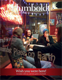

Trouble viewing this e-mail? Click here to see it in your browser.
 |
|
 |
|
| April 2010 | |
|
Hello Humboldt families! We hope this newsletter helps keep you involved with your student's experience at Humboldt State. Living it up off campusDesiree Perez The next school year is approaching quickly and many students – both new and returning – have already decided Humboldt State is the place for them. Now all they have to decide is where they'll live. I've chosen to live on campus during my time here at HSU. For me, the convenience of living, working and going to school on campus overshadows the appeal of having my own place. But many students choose to live off campus – and now is the time to start looking. My suitemates are in the middle of the house hunt right now, so I know what goes into it – searching Craigslist, phone calls to landlords and saving up for that big deposit. It can be overwhelming at times. But HSU Housing has its own website full of resources and tips to make the off-campus housing search easier. I spoke with Buddy White, HSU's Off-Campus Housing Coordinator, about finding housing in Humboldt County. Here's what he had to say.
Last but not least, your student can attend an informational meeting on campus to discuss off-campus housing. Buddy will be talking about off-campus housing needs on April 21 and 22 at 5 p.m. in the Klamath River Room on the 2nd floor of the Jolly Giant Commons. Students are encouraged to bring their questions and concerns.
Meet Humboldt: Sarah Schneider"I chose HSU because of its acclaimed environmental science program. Interestingly, my dad almost studied wildlife management at Humboldt State in 1967, but he changed his mind about becoming a ranger. It was not until I decided to enroll here that my dad shared that story with me. And when he visited me he was so blown away by Humboldt's campus that I could tell he was a bit sad he never came to school here." Read More » Overheard this month on the family network »"Hi all - feeling very excited and yet very nervous that "my lil girl" is ready to go to college. So proud of her. Any parents in the Los Angeles area going to Spring Preview in April? Share cost and ride? Or perhaps meet for coffee and share thoughts, ideas, news etc..." Reply or Read more from HSU families. Or, if you're not part of the network yet, sign up now. Latest News from HSUHSU Plays Major Role in Energy Savings Researchers Find Surprising Growth in Old Age Trees |
Stay connected
Important Dates
Humboldt magazine
Humboldt State parents and families have given more during the first half of this year than all of last year. Thanks for your generosity. |
|
Humboldt State University |
|
 About the editor – Desiree Perez is from Corona, Calif., and is a Journalism major with a concentration in Broadcast and an area of study in Film. She is a student writer with HSU Marketing & Communications and assistant coordinator of the Graduation Pledge Alliance.
About the editor – Desiree Perez is from Corona, Calif., and is a Journalism major with a concentration in Broadcast and an area of study in Film. She is a student writer with HSU Marketing & Communications and assistant coordinator of the Graduation Pledge Alliance.